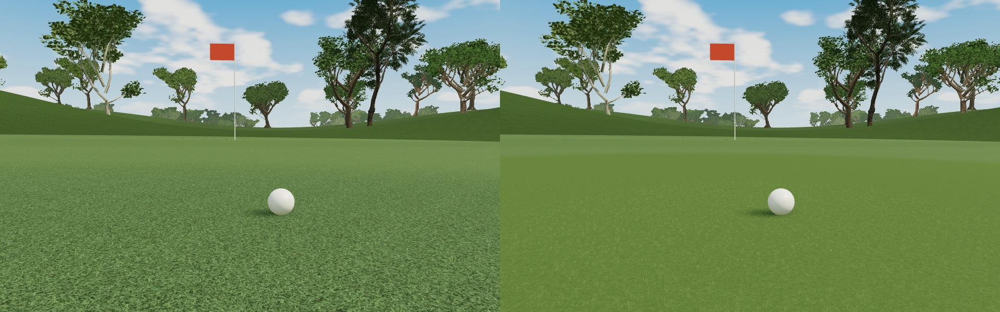
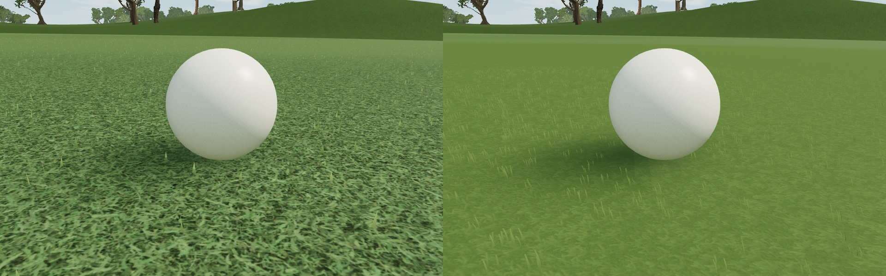
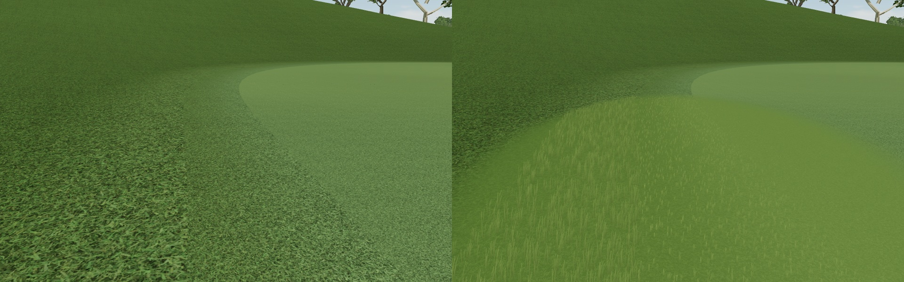
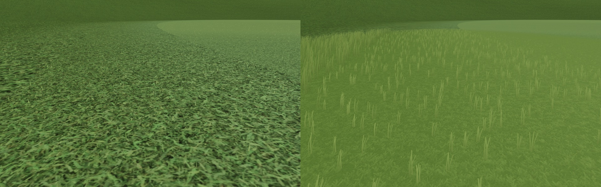
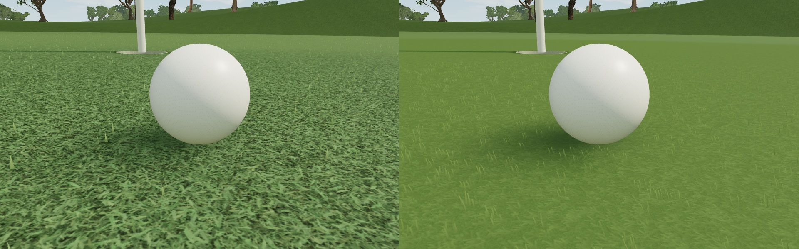
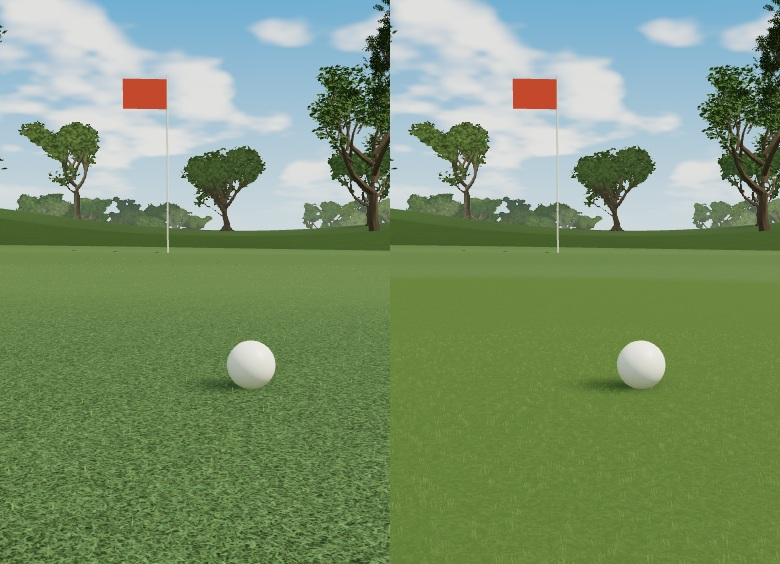
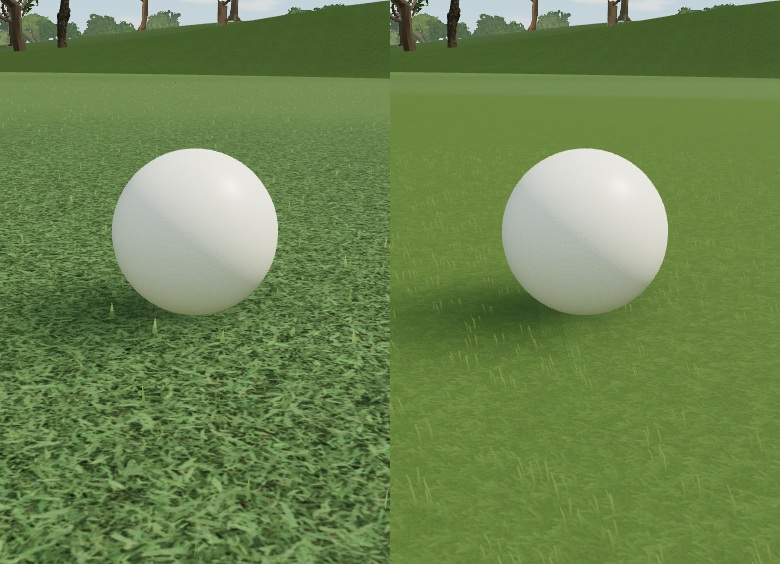
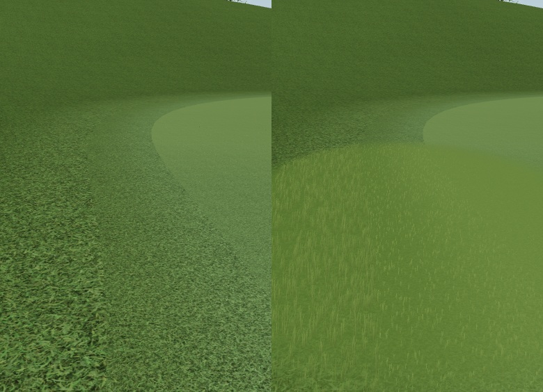
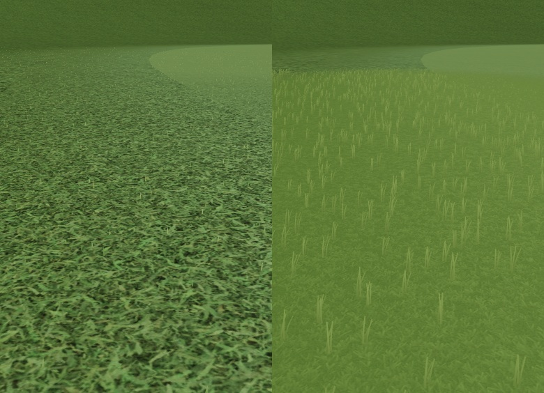
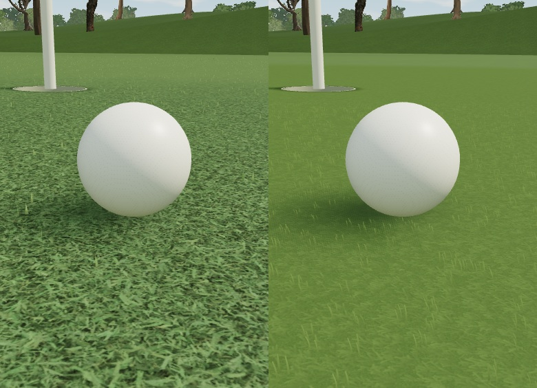

기존시제품

TURF STUDY · 2026.10.28
공 주변 반경 1.9m와 그린 가장자리 약 3m 구간의 시제품입니다. 아래는 실제 Three.js 씬을 CPU 어댑터로 렌더한 비교이며, 브라우저 캡처·휴대폰 실측은 아닙니다. 카메라·태양·공·홀·궤적·퍼팅 면·수목을 같은 조건으로 검사했습니다.
| 항목 | 기존 | 시제품 |
|---|---|---|
| 그린 표면 | 일반 잔디 사진 반복 | 0.25mm 해상도로 생성한 짧은 잎·절단면 색/노멀, 비정렬 샘플 두 개와 mipmap |
| 가까운 잎 | 3–5.5mm 단일 삼각형, 자체 색 | 약 3mm, 3개 잎의 포기, 3단 굽힘과 넓이가 남는 잘린 끝, 코스 PBR 조명·그림자 |
| 표현 범위 | 카메라 앞 직사각형 | 공 주변 1.9m 표면, 가장 가까운 0.46m 입체 잎 + 가장자리 한 구간 |
| 가장자리 | 색·사진 크기 차이 위주 | 그린 3mm / 프린지 11mm / 러프 30mm, 높이와 실루엣 차이 |
| 잔디 삼각형 예산 | 최대 32,000 | 최대 216,000 / 중간 118,800 / 성능 우선 54,000 · 실제 FPS는 미측정 |
비교 관찰: 사진의 길고 뒤엉킨 잎 대비가 줄어 관리된 그린의 균일한 면이 보입니다. 근접에서는 짧은 끝과 공통된 결이 남고, 가장자리에는 더 긴 잎이 올라옵니다. 전체 코스 변화는 제한적입니다. 극근접의 가는 잎과 저해상도에서의 미세 윤곽, 시제품 구간과 기존 표면 사이 전환은 계속 조정할 수 있습니다.











두 비율, 여섯 구도, 두 안의 정지 이미지 24장과 비교 이미지 12장을 생성했습니다. 공이 이동한 뒤의 표면과 잎 위치도 확인합니다. 수목 배치·기하, 퍼팅 면·궤적·좌표·시간·카메라·조명은 양쪽이 같습니다. 수목과 물리 관련 원본 소스의 해시도 작업 전과 일치합니다. 잔디만 보이게 한 렌더에서 태양 밝기 및 시험용 차폐물의 그림자에 반응하는지 검사했습니다.
브라우저 창 접근 승인이 시간 초과되어 자동 UI 검증은 미완료입니다. Android/iOS 실기기 FPS·GPU 시간은 미측정입니다. 추가 색·노멀 텍스처의 mipmap 포함 메모리는 약 10.7MiB이며 잔디 삼각형도 늘었습니다. 실기기 측정 뒤 밀도와 해상도를 조정해야 합니다. 나무 자산·배치와 작은 나무 21그루 제거 상태는 유지했습니다. 퍼팅은 기존 5.15초 샘플이며 실제 물리 계산이 아닙니다.